ChargeDeck ist ein privat entwickeltes, inoffizielles Hilfsprogramm. Es steht in keiner Verbindung zu Junsi oder zu Händlern des iCharger und wird von diesen weder geprüft noch unterstützt.
Die Benutzung der App, dieser Anleitung, der WLAN-Brücke und aller weiteren Bestandteile erfolgt vollständig auf eigene Gefahr. Es wird keine Gewähr übernommen für Richtigkeit, Vollständigkeit, Verfügbarkeit oder Funktion – weder für angezeigte Messwerte noch für Schutz- und Warnfunktionen, Programme, Einstellungen oder Befehle an das Ladegerät.
Jede Haftung für Schäden aller Art ist – soweit gesetzlich zulässig – ausgeschlossen. Das gilt insbesondere für Schäden an Akkus, Ladegerät, Netzteil oder Eingangsbatterie, Tablet und sonstigen Geräten, für Brand-, Sach- und Personenschäden, für Datenverlust sowie für Folgeschäden.
Das Tablet muss beim Verbinden der USB-Host sein. Dafür ist zwingend ein OTG-Kabel bzw. OTG-Adapter nötig. Ein normales Ladekabel funktioniert nicht.
Es gibt zwei Ausführungen der App:
| Datei | Ausführung |
|---|---|
| ChargeDeck-Testversion-bis-2026-12-12.apk | Testversion, gültig bis 12.12.2026, 12:12 Uhr. Danach sind Start sowie Programme anlegen und ändern gesperrt (siehe Abschnitt 9). |
| ChargeDeck.apk | Vollversion ohne Ablaufdatum. |
Die App startet beim Anstecken des Laders automatisch, liest die Ladeprogramme und zeigt „Verbunden: DX8 …“. Erst danach erscheinen die Start-Knöpfe.
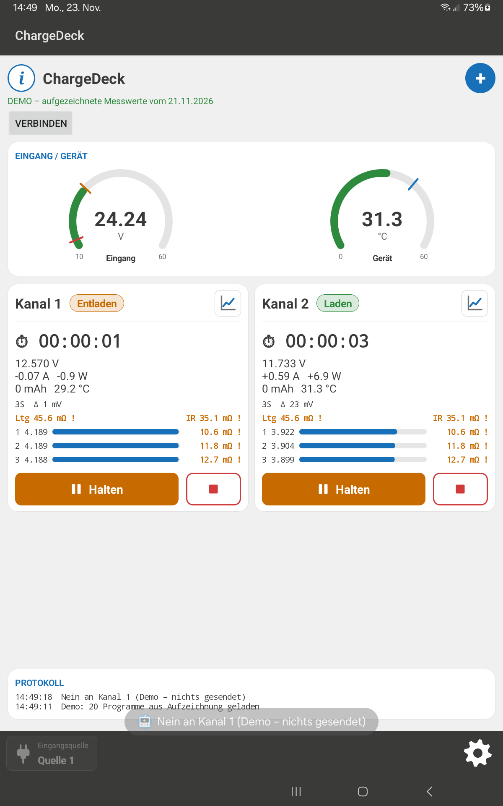
Die App lässt sich im Hoch- und Querformat bedienen. Mit „Zurück“ läuft sie bei bestehender Verbindung im Hintergrund weiter.
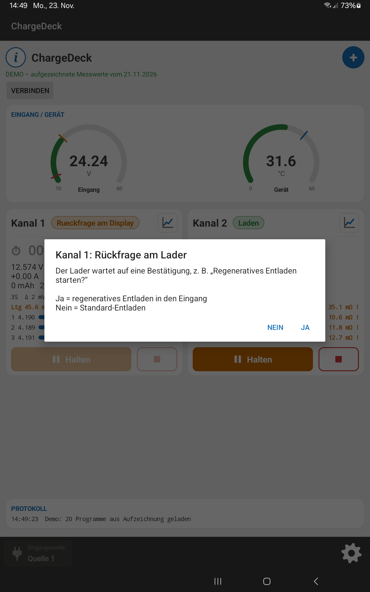
Fragt der Lader etwas (z. B. „Regeneratives Entladen starten?“), zeigt die App die Frage mit Ja / Nein. Die Antwort geht direkt an den Lader. Die App beantwortet Rückfragen nie selbst.
Solange eine Rückfrage offen ist, sendet die App kein STOP – zuerst die Frage beantworten.
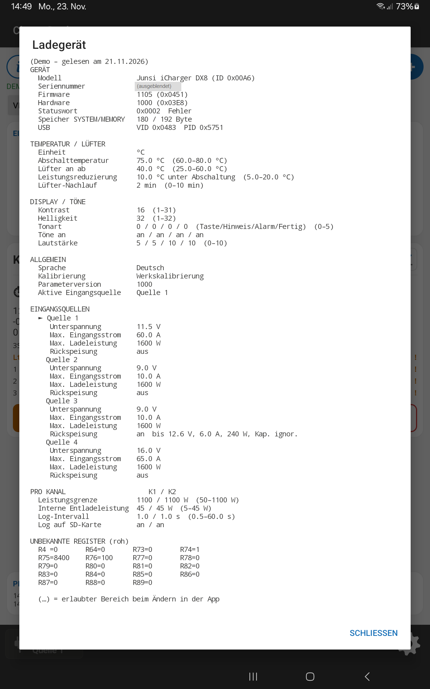
Der Info-Knopf oben links liest alles, was der Lader ausser den Ladeprogrammen liefert: Modell, Seriennummer, Firmware, Temperatur- und Lüftereinstellungen, Display und Töne, die vier Eingangsquellen und die Leistungsgrenzen pro Kanal. Werte in Klammern sind die in der App erlaubten Bereiche.
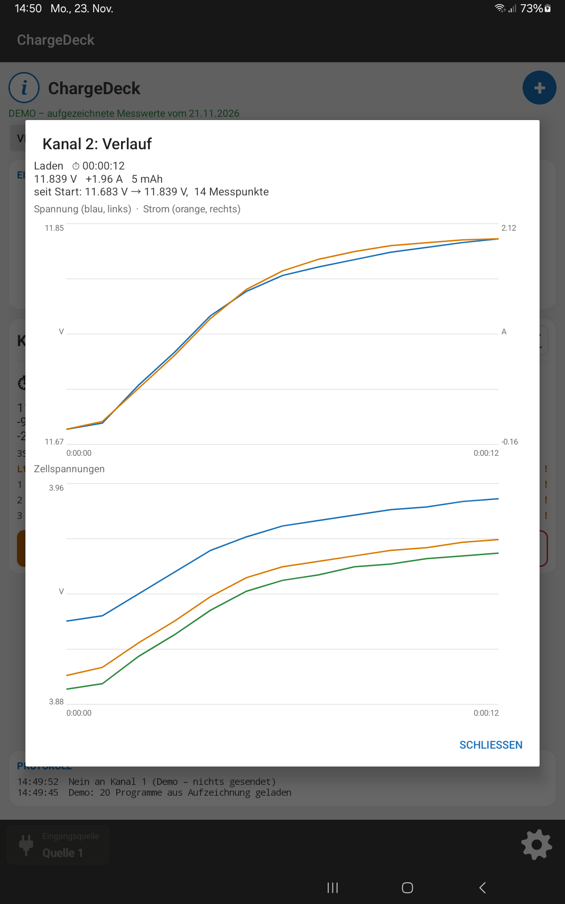
Der Diagramm-Knopf in der Kanal-Kachel zeigt den Verlauf seit dem Start: Spannung und Strom oben, die einzelnen Zellspannungen unten. Der Verlauf wird nur in der App gehalten; es werden keine Dateien gespeichert.
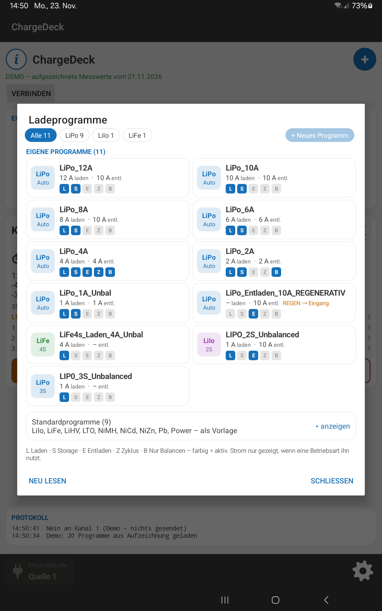
Einstellungen → Ladeprogramme zeigt alle Programme als Kacheln: eigene Programme oben, Standardprogramme eingeklappt darunter. Filter nach Akkutyp oben.
Die Buchstaben zeigen, welche Betriebsarten am Lader aktiv sind: L Laden, S Storage, E Entladen, Z Zyklus, B Nur Balancen.
Antippen öffnet den Assistenten. Standardprogramme lassen sich nur ansehen und „als Kopie anlegen“.
Programme anlegen und ändern, Eingangsquellen und Ladegerät-Einstellungen sind nur möglich, wenn kein Kanal arbeitet. Sonst erscheint eine Meldung mit dem Grund.
Der Assistent führt in sechs Schritten durch das Programm. Oben zeigt eine Leiste, wo man steht; ein Tipp auf einen Schrittnamen springt direkt dorthin. Unten: Abbrechen · Zurück · Weiter. Alle Zahlen werden mit Schiebereglern eingestellt (mit −/＋ für Feinschritte), min–max steht jeweils darunter. Seltene Einstellungen sind unter „▸ Für Profis“ eingeklappt.
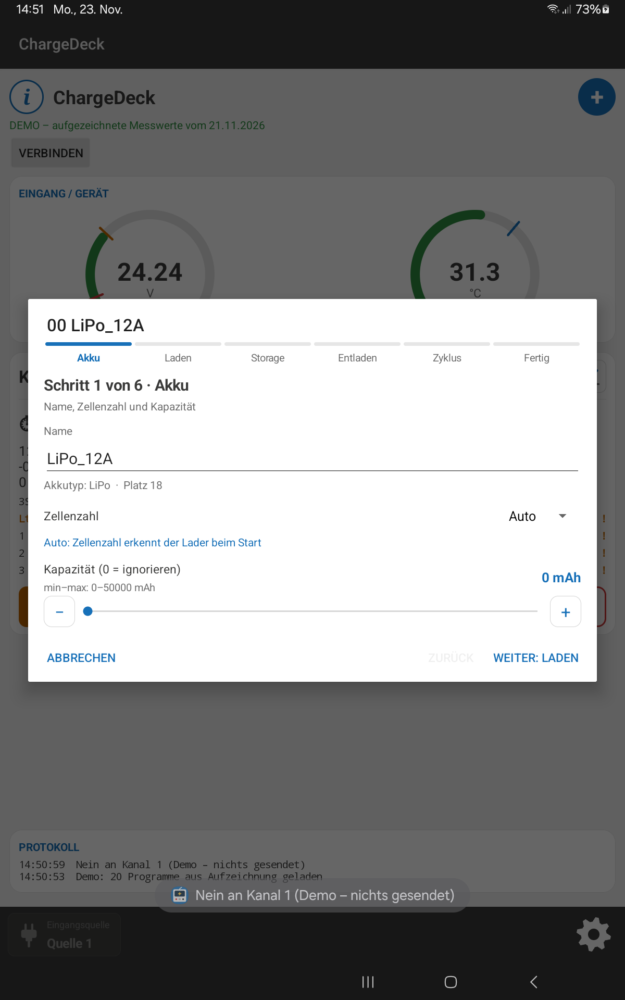
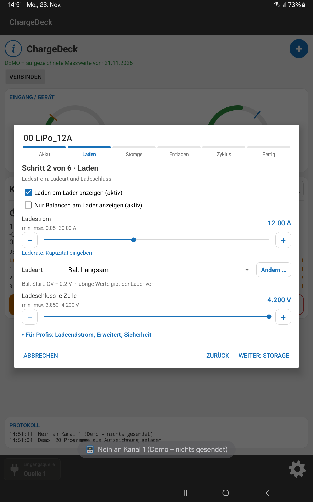
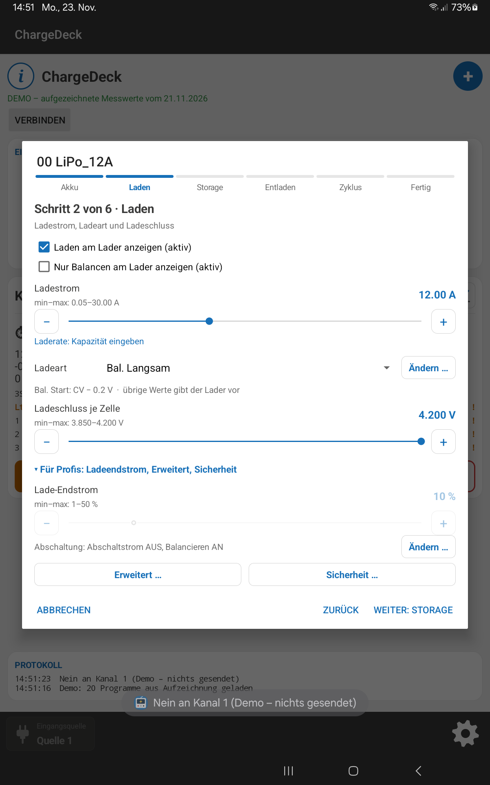
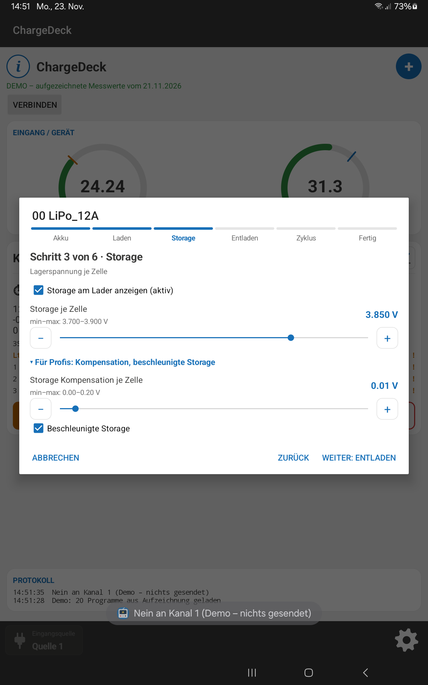
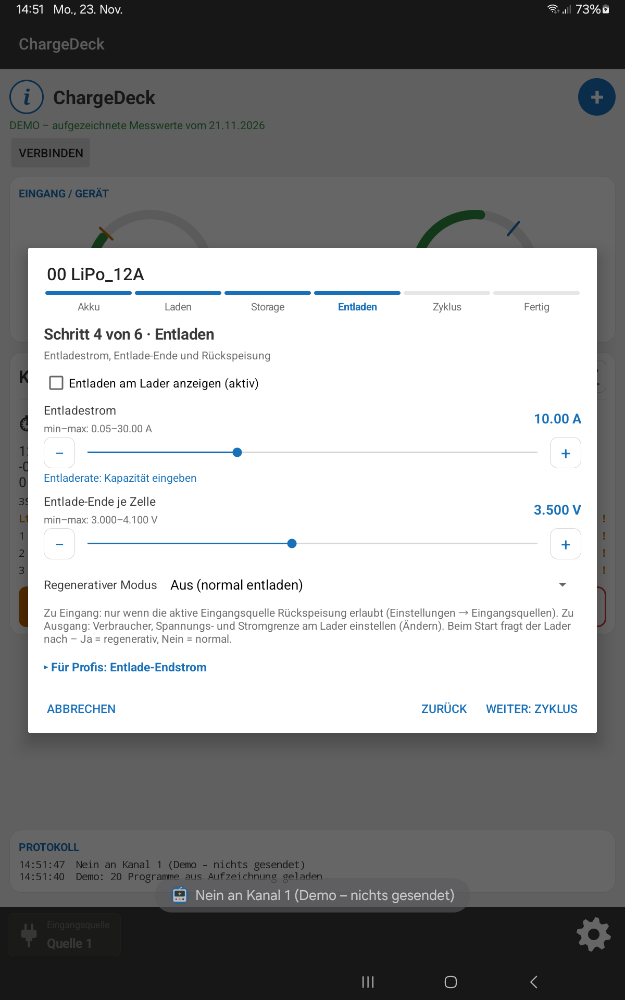
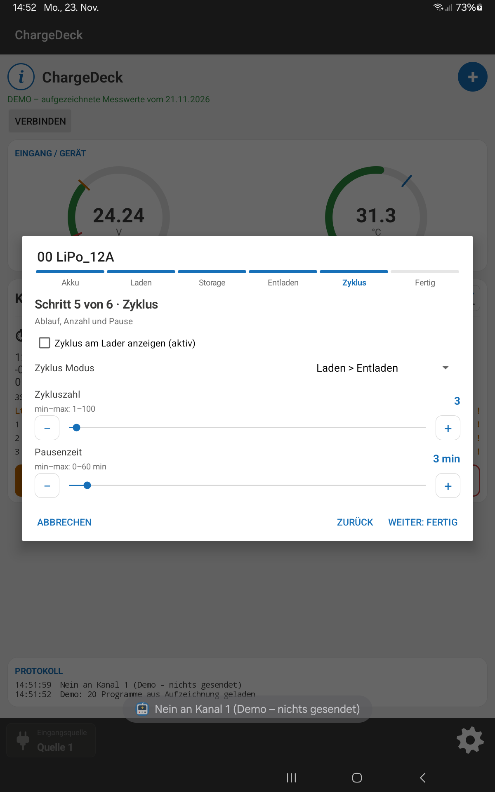
| Schritt | Inhalt |
|---|---|
| 1 · Akku | Name, Akkutyp, Zellenzahl mit berechneter Akkuspannung (voll / nenn / Storage / leer), Kapazität. |
| 2 · Laden | Ladestrom mit Laderate (C), Ladeart (Bal. Langsam / Normal / Schnell / Modifiziert / Ohne Bal.) mit „Ändern …“ für die Balancer-Werte, Ladeschluss je Zelle. Profi: Ladeendstrom mit Abschaltbedingung, „Erweitert …“ (verzögertes Nachladen, Reaktivierung bei Unterspannung), „Sicherheit …“ (Abschalttemperatur, max. Kapazität, Ladezeit). |
| 3 · Storage | Storage-Spannung je Zelle. Profi: Kompensation, beschleunigte Storage. |
| 4 · Entladen | Entladestrom mit Entladerate (C), Entlade-Ende je Zelle, Regenerativer Modus (Aus / Zu Eingang / Zu Ausgang). Profi: Entlade-Endstrom. |
| 5 · Zyklus | Ablauf (z. B. Laden > Entladen), Zykluszahl, Pausenzeit. |
| 6 · Fertig | Liste aller Änderungen, Ausgang- und Speicher-Optionen (Vorgangszähler, Log-Intervall, Log nach Fertigstellung, Daten auf SD). „Speichern …“ zeigt eine Rückfrage, schreibt in den Lader und liest zur Kontrolle zurück. |
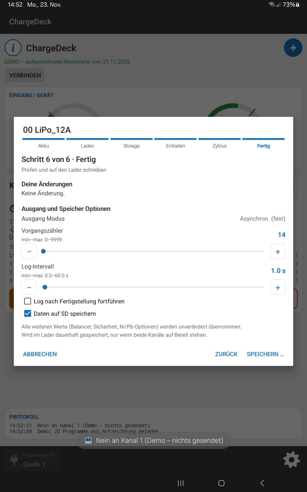
In jedem Schritt steht oben „… am Lader anzeigen (aktiv)“: damit wird die Betriebsart am Lader ein- oder ausgeblendet.
Der Ausgang-Modus ist immer Asynchron.
Nach dem Speichern erscheint „… auf Lader geschrieben und geprüft“. Erst dann sind die Start-Knöpfe wieder frei.
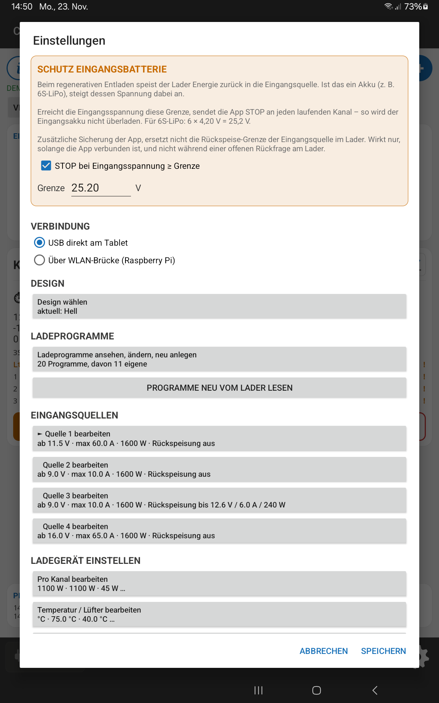
Alle Werte, die in den Lader geschrieben werden, zeigt die App vorher in einer Rückfrage.
| Code | Anzeige in der App | Was tun |
|---|---|---|
| 1305 | Verbindungsfehler | Akku richtig angesteckt? Lader-Display zur Hauptanzeige, dann erneut starten. |
| 2001 / 2006 | Verbindungsunterbruch am Ausgang | Ladekabel und Stecker am Ausgang prüfen. |
| 2005 | Verbindungsunterbruch am Ausgang bei Entladen | Kabel am Ausgang prüfen. |
| 2403 | Balancerkabel | Balancerkabel prüfen. |
| 3000 | Balancer notwendig | Balancerkabel anstecken oder Ladeart „Ohne Bal.“ wählen. |
| andere | „FEHLER“ und „Fehler xxxx – unbekannt“ | Meldung am Lader-Display lesen. |
| Problem | Lösung |
|---|---|
| App findet den Lader nicht | OTG-Kabel richtig herum (Host-Ende am Tablet) bzw. OTG-Adapter + Datenkabel verwenden; am DX8 USB PD = AUS; USB-Zugriff für ChargeDeck erlauben; Kabel ab- und wieder anstecken. |
| Start wird abgelehnt | Lader-Display in die Hauptanzeige bringen; Akku und Balancer prüfen. |
| Start-Knopf fehlt | Die Programme werden noch gelesen – kurz warten. |
| Start-Knopf gedimmt | Kein Akku erkannt, ein Programm wird gerade gespeichert oder die Testversion ist abgelaufen. |
| Kein Zugriff, obwohl verbunden | Andere Programme, die den Lader per USB nutzen (z. B. am PC), schliessen. Es kann immer nur ein Programm gleichzeitig mit dem Lader sprechen. |
| Meldungen ohne Ton | Medienlautstärke am Tablet erhöhen; Benachrichtigungen für ChargeDeck erlauben. |
ChargeDeck · inoffizielle App für den Junsi iCharger DX8 · Nutzung auf eigene Gefahr (siehe Haftungsausschluss auf Seite 1). „iCharger“ und „Junsi“ sind Namen bzw. Marken ihrer jeweiligen Inhaber.